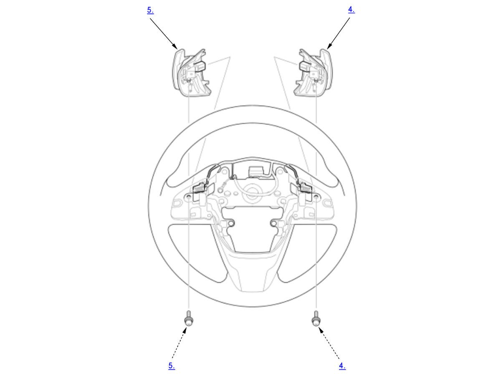

Removal and Installation: Procedure
NOTE:
Numbered call-outs in figure pertain to list numbers in following procedure.

Courtesy of HONDA, U.S.A., INC.- Steering Wheel - Remove
- Steering Wheel Rear Cover - Remove
- Steering Wheel Trim - Remove
- Paddle Shifter + (Upshift Switch) - Remove
- Paddle Shifter - (Downshift Switch) - Remove
- All Removed Parts - Install
1. Install the parts in the reverse order of removal. - VSA Sensor Neutral Position - Memorize